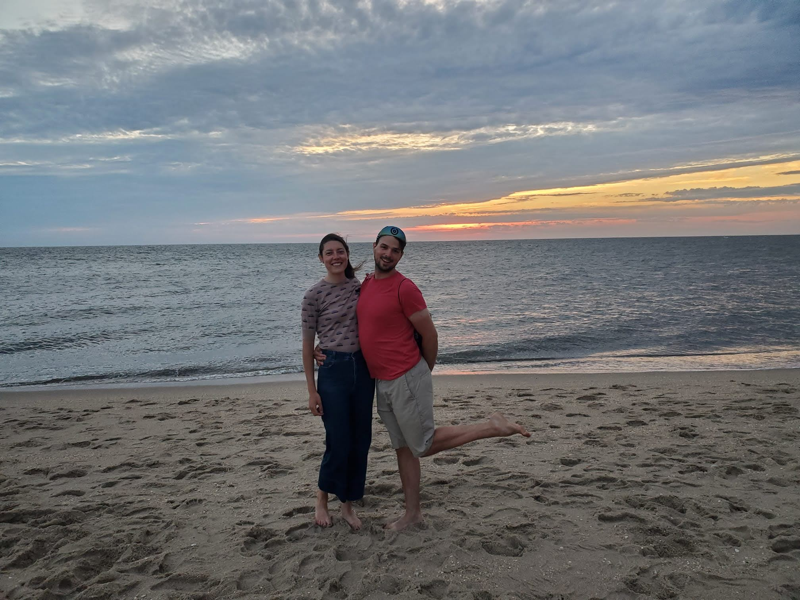
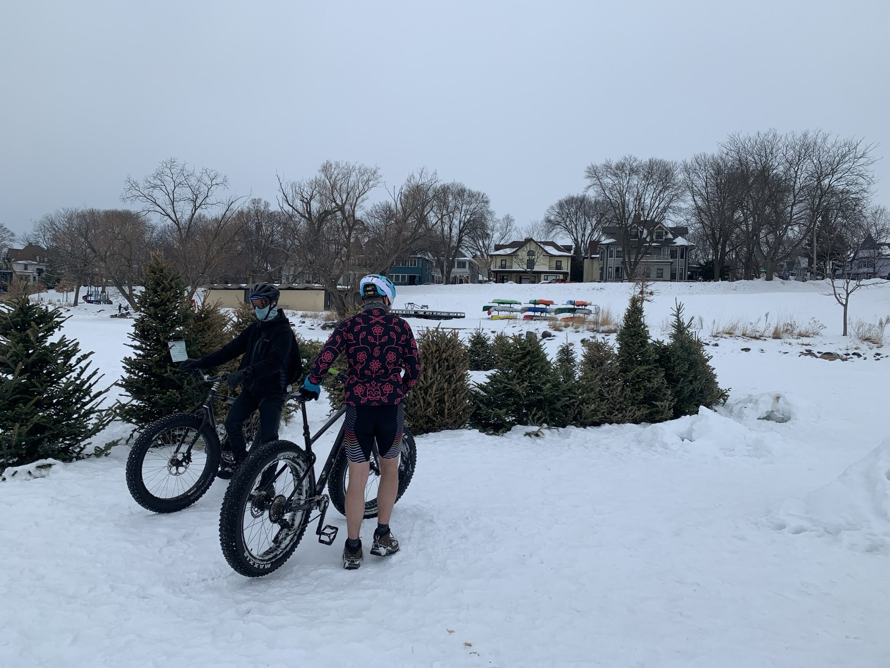
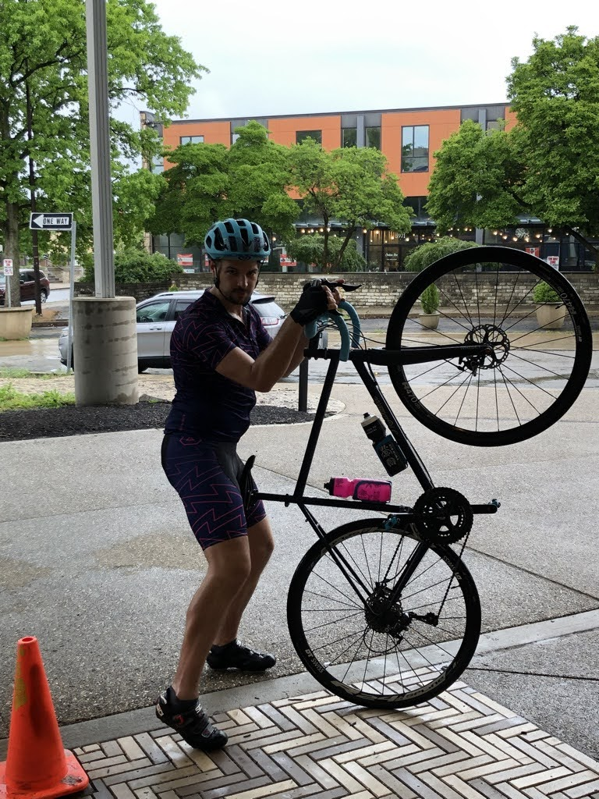
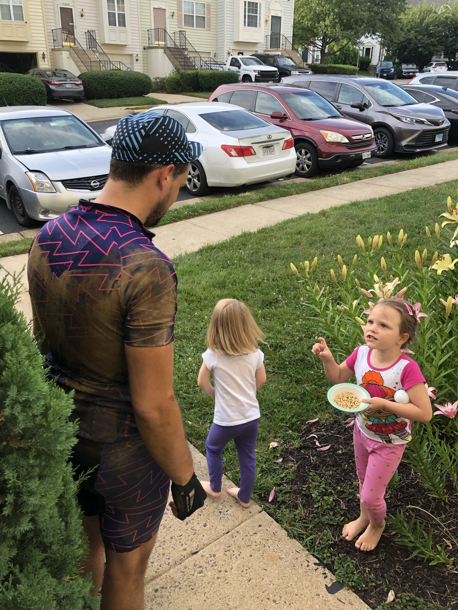
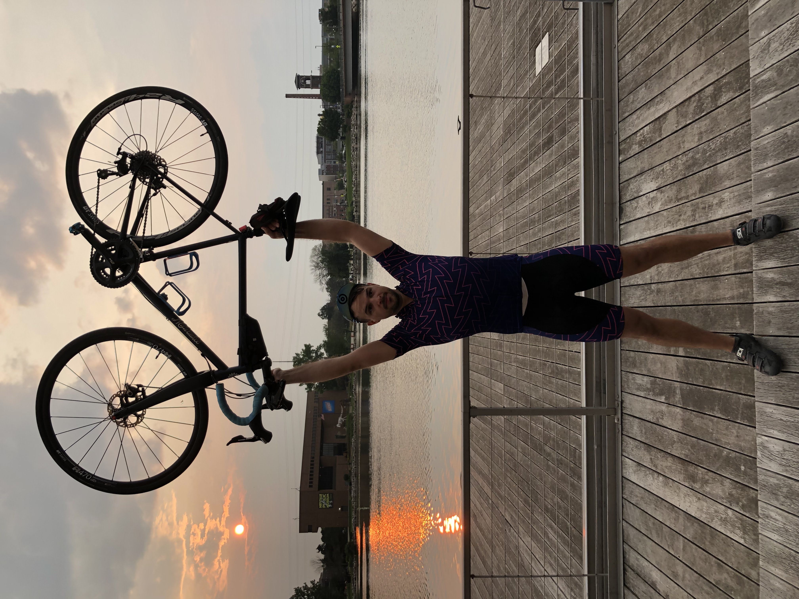
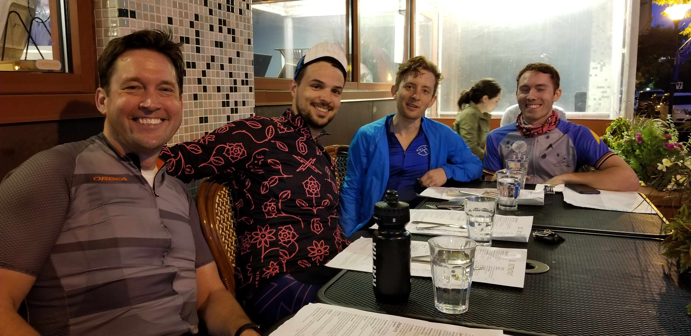
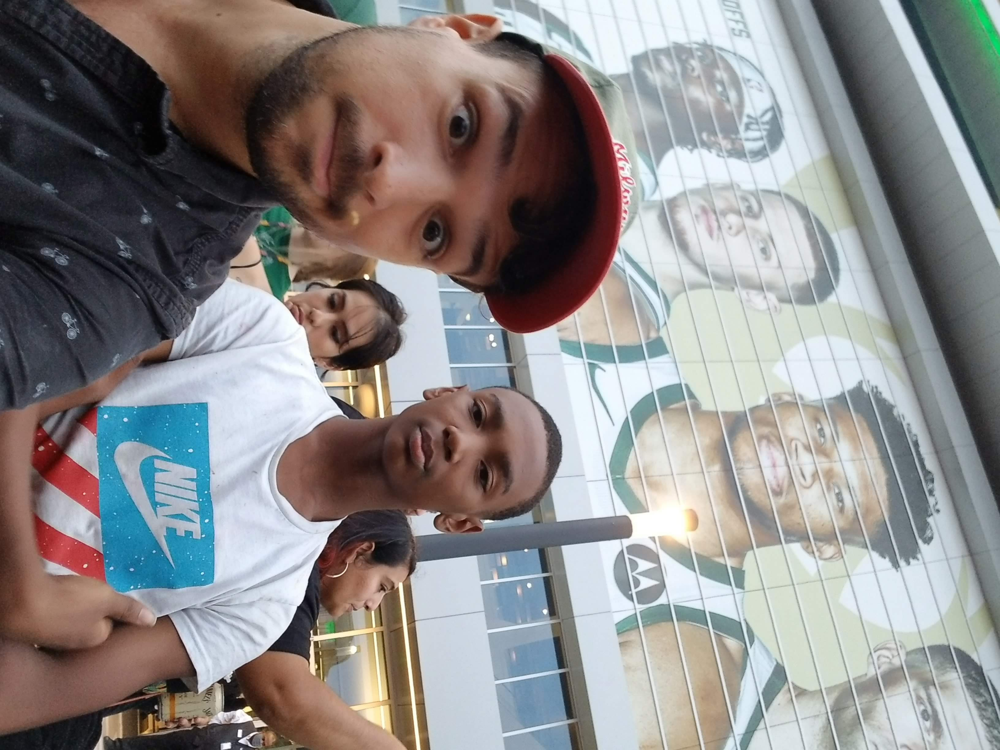
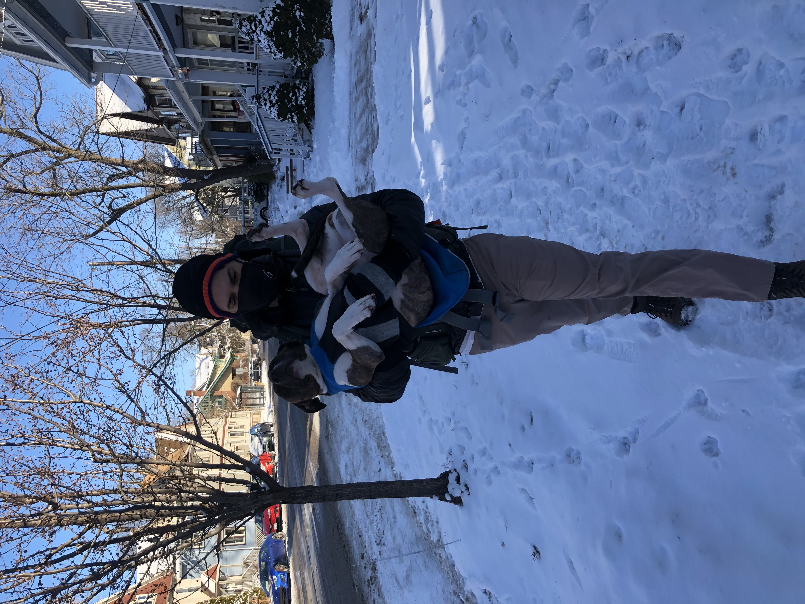

2021 now heads behind us, 2022 approaches ever faster. Writing this from a snowy winter wonderland in Quebec, amidst the Omicron outbreak, I can only express my sincere emotional confusion about 2021...many many happy moments, many many not, all nesteled amongst a backdrop of feeling like neither is even remotely appropriate.
Last year I wrote about a few of the ills befalling the world, and felt like I had really covered the bases. Of course though, 2021 really went above and beyond finding ever more ways to make us all worry, about the most basic of things. So, instead of a focus on the backdrop of bs we all just went through, let me take you on a little read of highlights of my family's year...that being said, it's not like any of the the things I listed last year have really gotten that much better, and apparently we need to toss the collapse of democracy into the mix of things to worry about, and omicron, did I mention omicron yet?...sorry, done now.

This past year my brothers and I held a funeral for my father Lee. We had a lovely turnout of friends and family in our hometown. The three of us have grown ever closer, and I am amazed at how loving and supportive we can be to one another.





I feel like on the whole I had a pretty positive year. I got in my "big adventure" as usual, this year it being a long bike ride, and a lot of training for it. My birthday even featured a short ride to go pick up pizza on the other side of the state. The company I work for moved me into management, so I am now a part of the bourgeoisie. We also reached "unicorn" satus, with the company itself getting a favorable valuation.
Natalie is the proud new owner of...A GREENCARD! We started the process last year during lockdown, and finihed our interviews late this year. It's meant that we've been able to travel to Canada and see family, and in general worry a little less about what visa status things look like. In 2021 she has also: been a domestique (cycling thing, which is also called a SAG (support-and-gear) but she hates being called "the SAG lady", which would be really a shame if folks found out abot that), curated another show , praised Jesus that Giuseppe won (though she was probably more a Jürgen girl), and wrapped up the course work requirement for her PhD.

Mom and Tom were able to come celebrate their Birthday with us in Madison this year. We also went to New Brunswick for American Thanksgiving to celebrate with them. We were very fortunate to welcome another member to our family this year! My step-brother John and his wife Cali have an adorable baby girl Leigha. My step-sister Ellie is actively interviewing for a professor-ship, we are all wishing her the best. All the nieces and nephews are grand. The last big news is that my mum Susan, is going to be moving to Montreal! She's going to be working for the Church of St. Andrew & St. Paul. This is a huge accomplishment, and we're all very excited for this new adventure.

Bryan has new toys, and the same look. We had the fortune of visiting him in DC this past year and enjoying his company, cooking, and local fare. The three brothers did a group trip to New River Gorge for a rafting outing. There were only some mild attempts to throw each other in.

Charley's 2021, from the outside looking in, seems like it went stellarly (sp? Is that even a word?). His job in Pittsburgh is going well, he has a nice apartment, he's picked up a few hobbies (whittling/woodcarving, and gardening), he is in a positve relationship, and his sense of style is still strong. For his birthday, we got him a Dim Sum cooking class in Pittsburgh. It featured special guests, Mom and Tom, and was run by...a yinz'er.

The Little Brother is still as goofy as ever. He, Nat, and I have been enjoying various anime together. We got to attend a playoff game for the Bucks in the "Deer District". We went to a LEGO convention in Milwaukee, and have spent many many many nights grappling with fractions/ratios/x/y/z...He also found this past year to have a deep love for Chinese food. One of the highlights of my year was watching him try Orange Chicken (the true introductory food) for the first time.

Oh Shit! Right! Jules! How could one forget?! I left you waiting a whole year for her DNA test results. For those of you who guessed "well obviously this street dog from Philadelphia is purebred", turns out, you're very right. Jules is 10,000% purebred American Staffordshire Terrier. She has not let this go to her head.
Till then, be of good courage, and know you are loved.
Cheers, Alex